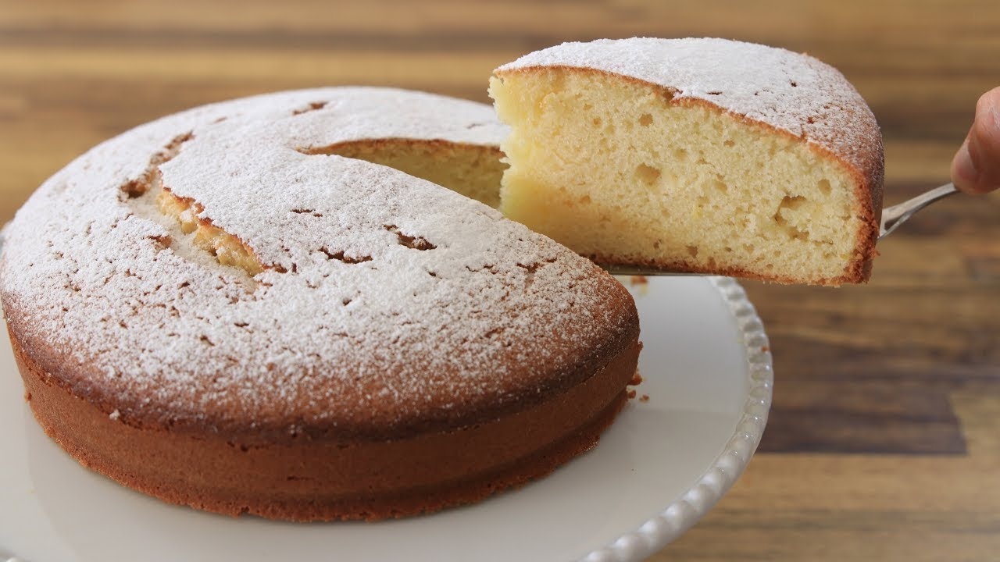

Easy Yogurt Cake
Description
This is an easy yogurt cake that uses the yogurt container to measure all
of the ingredients. It's ready in under an hour and the perfect
not-too-sweet snack or breakfast treat. It's known in France as "Gâteau au
Yaourt" and is typically the first cake that French children learn how to
make. My son attends a French school and has made this with his
classmates.

Ingredients
- 1 (5 ounce) container plain yogurt
- 1/2 yogurt container vegetable oil
- 2 large eggs
- 1 1/2 yogurt containers white sugar
- 1 teaspoon vanilla extract
- 1 3/4 yogurt containers all-purpose flour
- 2 ½ teaspoons baking powder
- 1 pinch salt
Steps
-
Preheat the oven to 350 degrees F (175 degrees C). Grease a 9-inch round
springform cake pan.
-
Empty the yogurt into a mixing bowl. Measure the oil, using the yogurt
container, and add to the yogurt. Set aside. Rinse yogurt container and
dry with paper towel to continue using it as a measuring tool.
-
Add eggs, sugar, and vanilla extract to the yogurt-oil mixture. Beat
well until thoroughly combined. Add flour, baking powder, and salt. Stir
until just combined; batter will be thick. Pour into the prepared cake
pan and spread to level the top.
-
Bake in the preheated oven until a toothpick inserted in the center
comes out clean, 25 to 30 minutes.